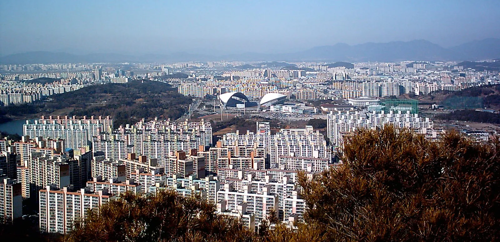

The city of Gwangju today, looks like any other Korean city, high rise apartments composing the skyline. After the uprising, everyone directly and indirectly affected were forced to continue on with their lives bearing the scars of the incident. Life had to go on. However, the city itself is forever haunted by the spectres and memories of those killed. The land itself was changed as we will later see with the uprising being memorialized with the May 18th National Cemetery commemorating the victims and highlighting the violence.
Return to Gallery